Essay Defense
Function Alignment In Present of Phase and Amplitude Noises
December 4, 2024
Acknowledgement
- I am deeply grateful to Dr. Anuj Srivastava for his guidance throughout this research.
- Special thanks to Dr. Sutanoy Dasgupta, the co-author, for the research ideas and valuable assistance.
- I deeply appreciate Dr. Eric Klassen and Dr. Xiulin Xie for their support and willingness to serve as my committee members.
- I am sincerely thankful to my major advisor, Dr. Wei Wu, for his unwavering support, warm understanding, and encouragement in shaping my work and future path.
Thank you all for your support!
Function Alignment In Present of Phase and Amplitude Noises with Visual Aid
Motivation and Goal
When the observed data is modeled as a true signal, \(g\) corrupted by noise, and the goal is to use data to estimate that true signal.
\[ f_i(t)=\alpha_i(g(t)\circ\gamma_i(t))+\epsilon_i(t), \quad i=1,2,\ldots,n. \qquad(1)\]
Perturbation Sources:
Multiplicative Noise \[ \alpha_i \in \mathbb{R}^+ \sim N(1,\sigma_{\alpha}^2) \]
Time Warping
\(\gamma_i \in \Gamma\), time warping function where \(\Gamma\) is diffeomorphism forming a group such that \[ \Gamma = \{\gamma:[0,1]\to[0,1] \mid \gamma(0) = 0, \gamma(1) = 1, \dot \gamma > 0\}, \] and the mean is \(\gamma_{id}\).Additive Noise:
\(\epsilon_i \in \mathbb{L}^2\) random smooth function with mean 0, s.t. \(\mathop{\mathbb{E}}(\epsilon_i(t)) = 0\).
Motivation: Additive Noise Only
Functions are generated from a single ground truth, \(g\)
With (1) additive noise only \[ f_i(t) = \alpha_i g(t) + \epsilon_i(t) \]
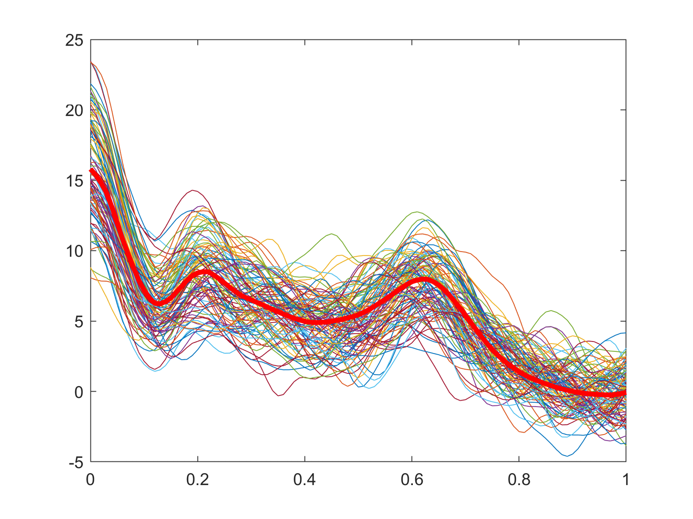
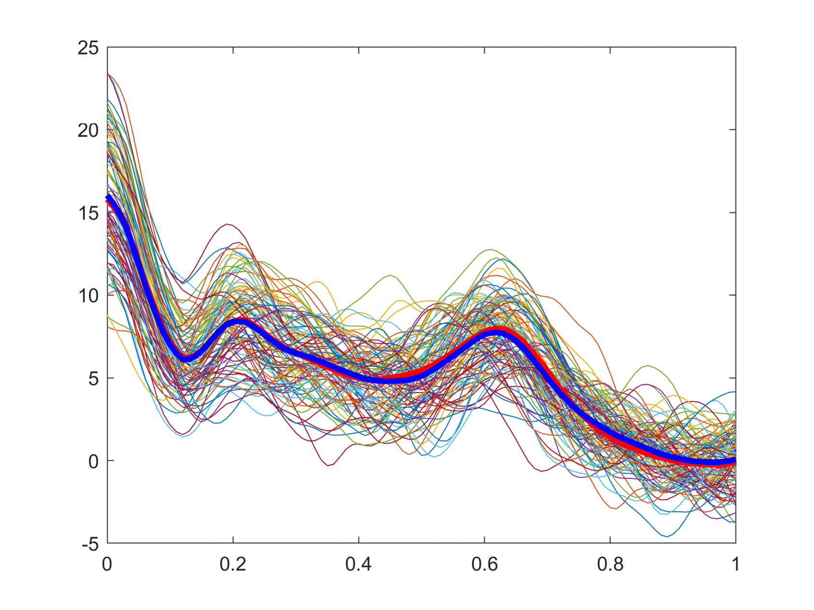
- \(g\)
- \(\bar{f} = \frac{1}{n}\sum_{i=1}^n f_i\)
Motivation: Warping Noise Only
Functions are generated from a single ground truth, \(g\).
With (2) Warping noise only \[ f_i(t) = \alpha_i (g\circ \gamma_i)(t) \]
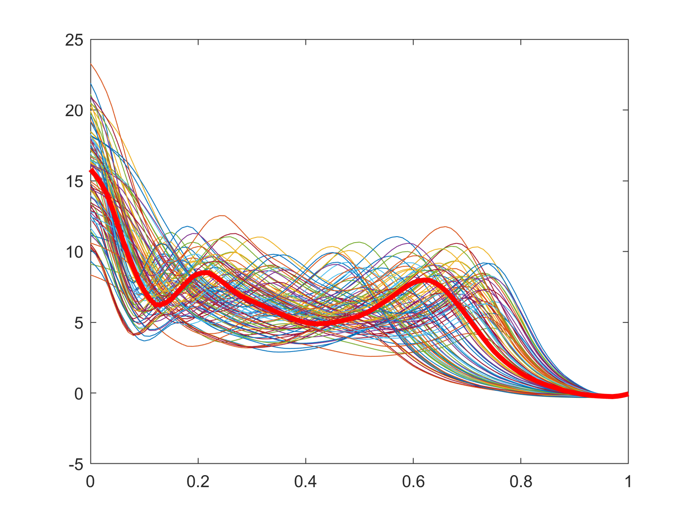
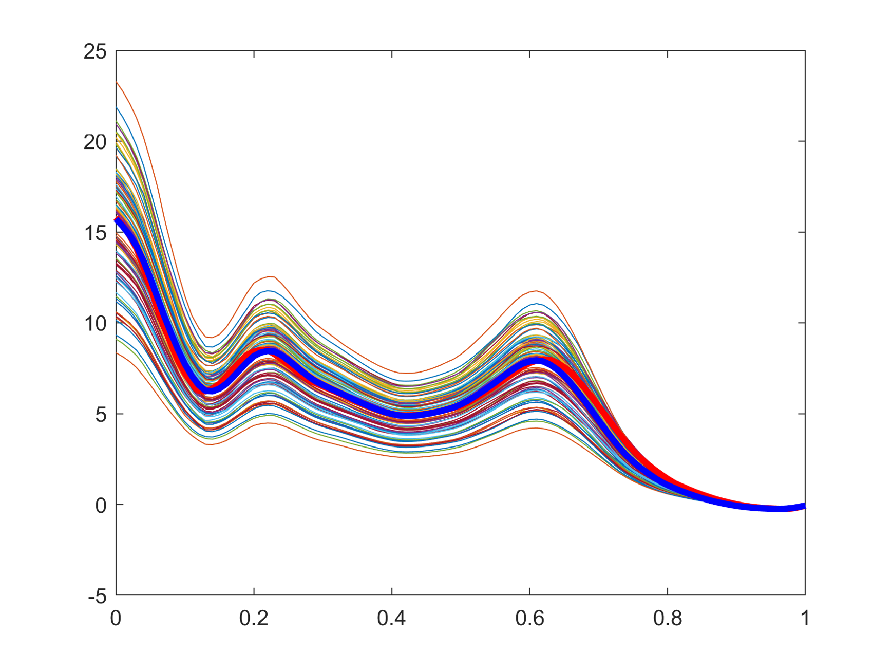
- \(g\)
- \(\frac{1}{n}\sum_{i=1}^n (f\circ\hat{\gamma}_i^{-1})\)
Motivation: Additive and Warping Noise
Functions are generated from a single ground truth, \(g\).
With Additive and Warping noise \[ f_i(t) = \alpha_i (g\circ \gamma_i)(t) + \epsilon_i(t) \]
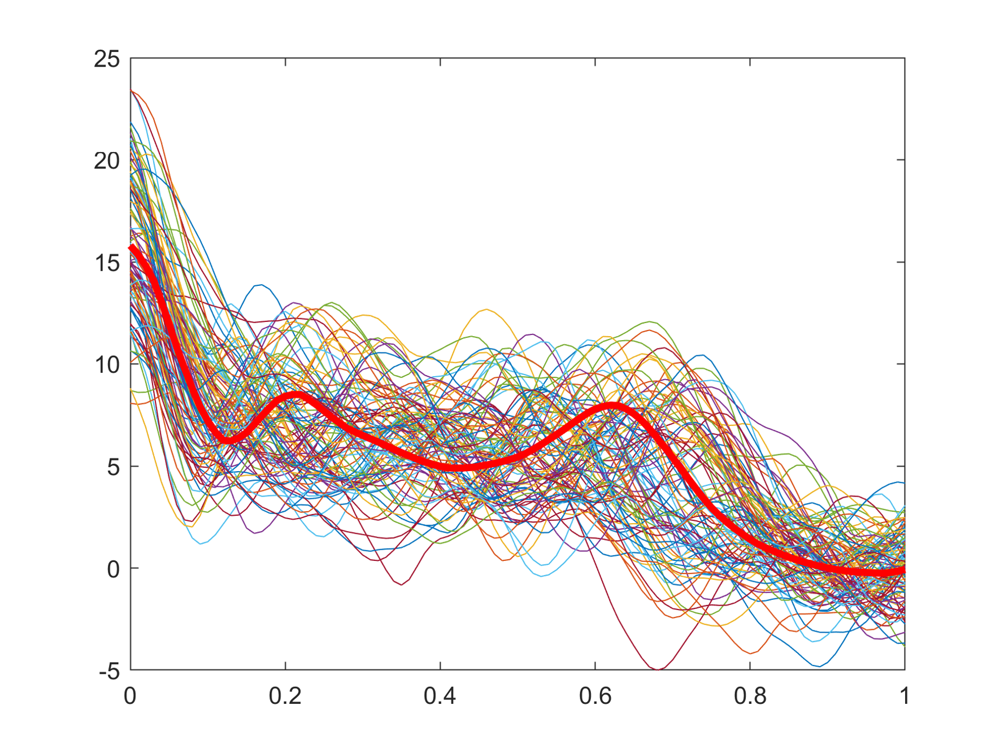
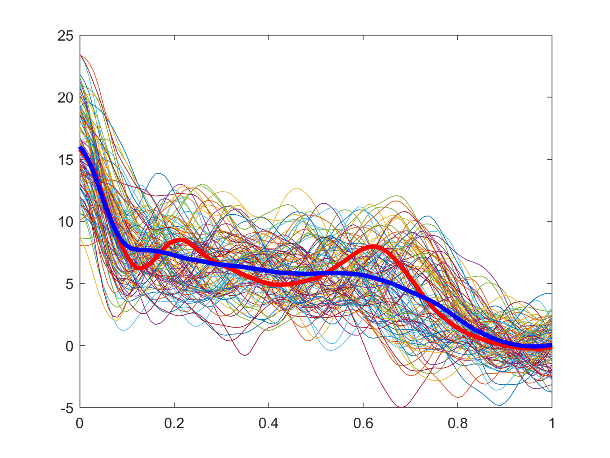
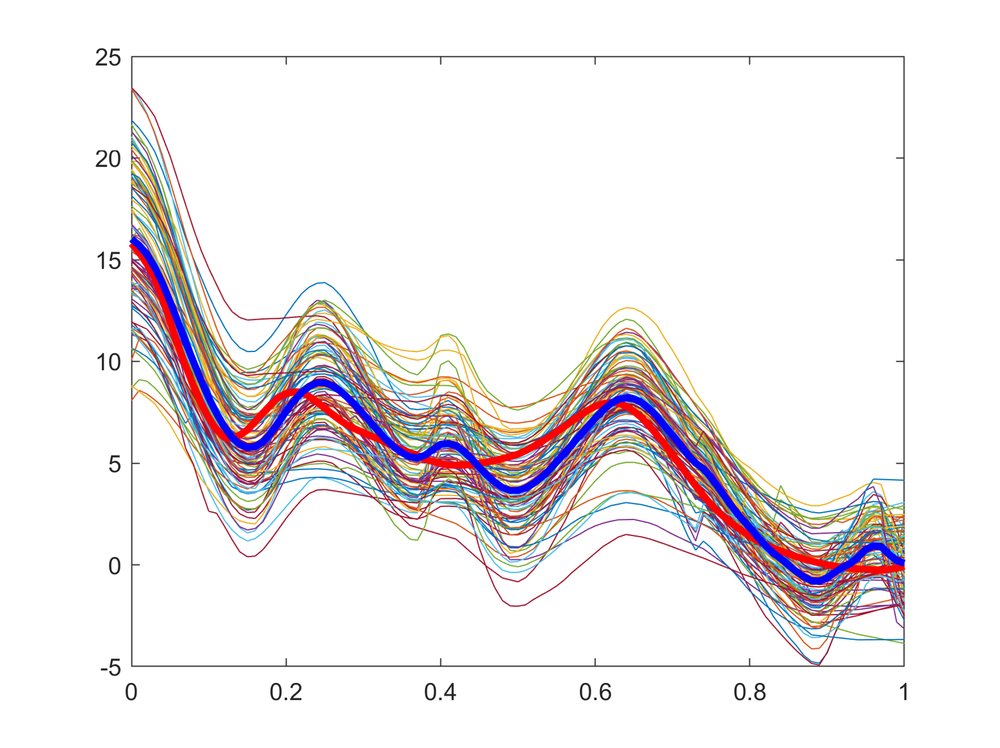
- \(g\)
- \(\bar{f} = \frac{1}{n}\sum_{i=1}^n f_i\)
-
\(\bar{h} = \frac{1}{n}\sum_{i=1}^n f_i^*\)
\(f_i^* = (f_i \circ \hat{\gamma}^{-1}_i)\)
Motivation: Additive and Warping Noise
Functions are generated from a single ground truth, \(g\).
With Additive and Warping noise
\[f_i(t) = \alpha_i (g\circ \gamma_i)(t) + \epsilon_i(t)\]
- \(g\)
- \(\bar{f}\)
- \(g\)
- \(\bar{h}\)
Motivation: Real Data
Growth Rate Data
- The location and duration of true growth spurts can be of interest.
- How many growth spurts does a person have in average?
- What are the duration of each spurt?
- When do spurts begin?
- Is the number of growth spurts different by gender?
- Alignment by SRVF with additive noise.
- Possible spurious peaks can be captured.
- Distortion in locations and durations of peaks.
Un-aligned Mean
Aligned Mean
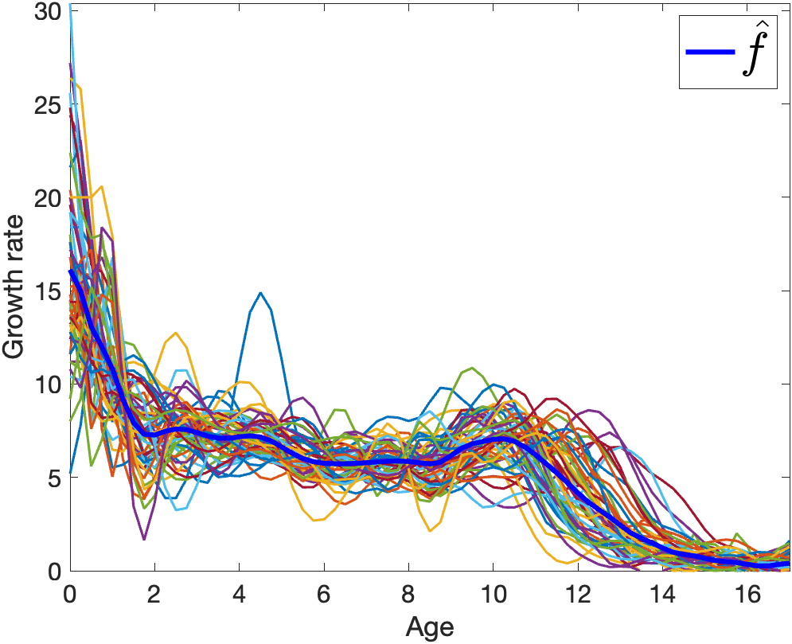
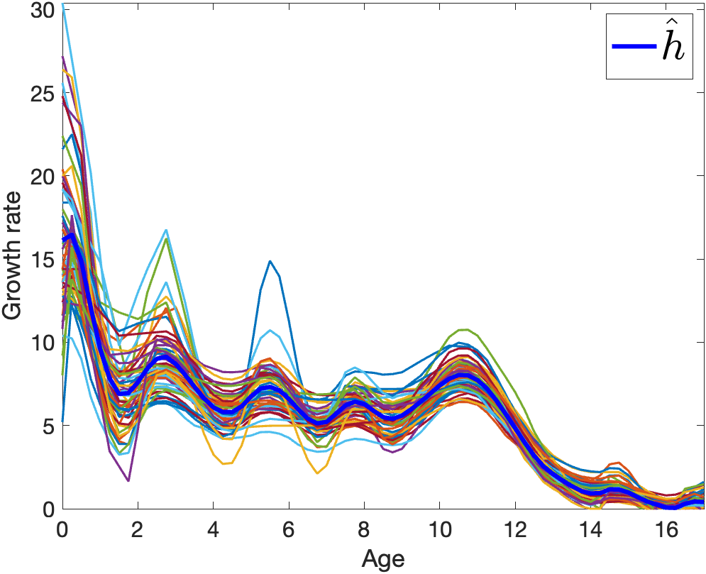
Motivation
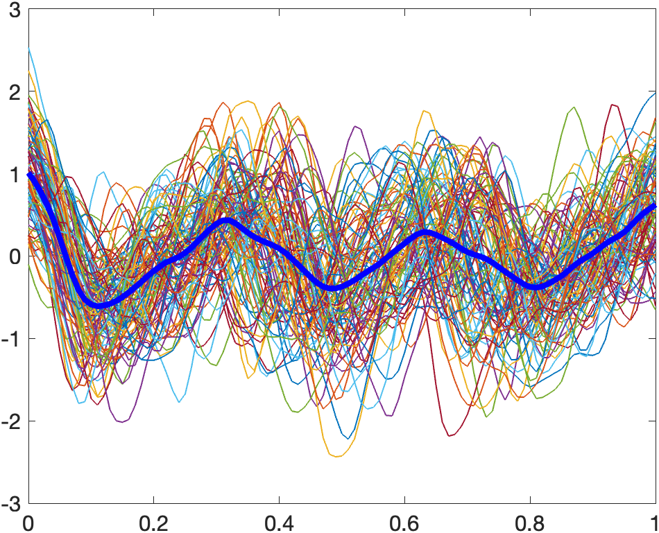
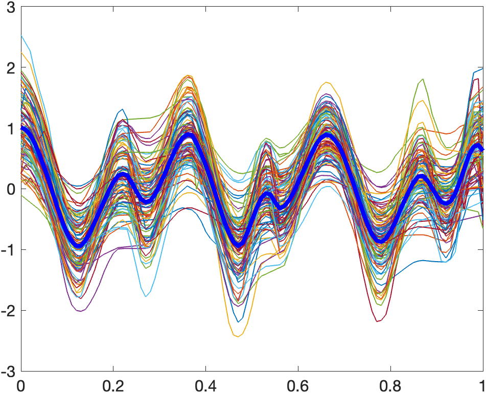
We assume that there exists a better function alignment in-between.
Motivation
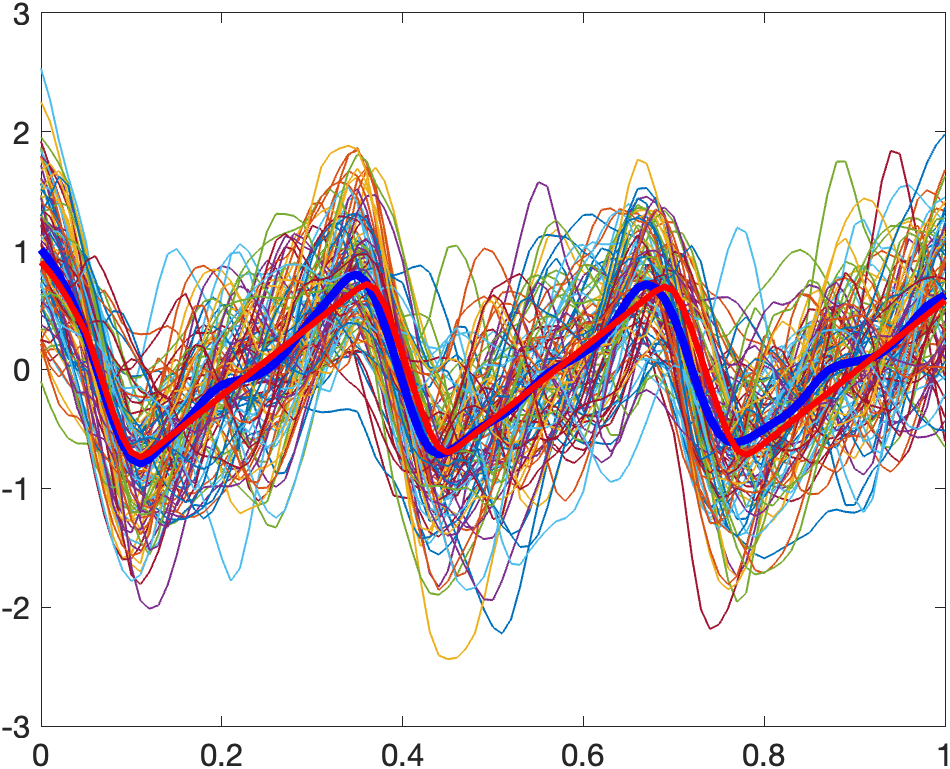
- \(g\)
- \(\bar{h}^*\)
Motivation:
Obviously, adjusting smoothing parameter, denoting \(\lambda \in \mathbb{R}\).
Given \(\{\lambda_l\}_{l = 1}^L\), and an objective function, partially aligned function sets can be computed: \[ \begin{align*} f^*_{\lambda_l,i}(t) &= (f_i \circ \hat{\gamma}_{\lambda,i})(t),\\ \bar{h}_{\lambda_l}(t) &= \frac{1}{n}\sum_{i=1}^n f^*_{\lambda_l,i}(t) \end{align*} \]
Our approach to solving the function alignment problem involves optimizing an objective function defined using the Fisher-Rao metric, rather than the more commonly used \(\mathbb{L}^2\) norm.
We can peek the results of the means of the partially alinged functions.
Overview Algorithm

Background Material Function Alignment
Let \(f \in \mathcal{F}\), where \(\mathcal{F}\) is the space of absolutely continuous functions. The square-root velocity function (SRVF) for \(f\) is defined as: \[ q(t) = \text{sign}(\dot{f}(t)) \sqrt{|\dot{f}(t)|}. \]
To model temporal variability, we introduce warping functions. A warping function \(\gamma : [0,1] \to [0,1]\) is an element of the Lie group \(\Gamma\), defined as: \[ \Gamma = \{\gamma \mid \gamma(0) = 0, \gamma(1) = 1, \dot{\gamma}(t) > 0 \}. \]
The action of the warping group \(\Gamma\) on \(\mathcal{F}\), denoted as \((f, \gamma)\), is given by function composition: \[ (f, \gamma) = f \circ \gamma. \]
When working with SRVFs, the group action changes due to the transformation of derivatives. For a pair \((q, \gamma)\), the action is defined as: \[ (q, \gamma) = (q \circ \gamma) \sqrt{\dot{\gamma}}. \]
Background Material Function Alignment
Given two SRVF functions \(q_1\) and \(q_2\), the goal of registration is to align \(q_2\) to \(q_1\) by finding the optimal warping function \(\gamma^*\). This is formulated as: \[ \gamma^* = \underset{\gamma \in \Gamma}{\arg \inf} \, \Big \| q_1 - (q_2, \gamma) \Big \|_{\mathbb{L}^2}. \]
For a set of SRVF functions \(\{q_1, \dots, q_n\}\), the problem of penalized elastic alignment involves finding a template function \(q \in \mathbb{L}^2\) that minimizes the following objective: \[ \sum_{i=1}^n \left( \inf_{\gamma_i \in \Gamma} \left[ \Big \| q - (q_i, \gamma_i) \Big \|^2 + \lambda \mathcal{R}(\gamma_i) \right] \right). \]
Here, the regularization term \(\mathcal{R}(\gamma)\) penalizes the deformation induced by \(\gamma\) and is chosen as: \[ \mathcal{R}(\gamma) = \|1 - \sqrt{\dot{\gamma}} \|_{\mathbb{L}^2}. \]
This formulation balances alignment accuracy with regularization, ensuring meaningful and interpretable warping functions.
Background Material Function Alignment
The penalized elastic alignment is given by: \[ \sum_{i=1}^n \left( \min_{\gamma_i \in \Gamma} \Big ( \| q - (q_i, \gamma_i) \|^2 + \lambda \mathcal{R}(\gamma) \Big ) \right) \]
The optimal \(\gamma_i\)s obtained inside the summation are used to (partially) align the given functions according to: \[ f^*_{\lambda, i} = f_i \circ \hat{\gamma}_{\lambda,i} \]
The partial elastic mean is defined as: \[\hat{g}_\lambda := \bar{h}_{\lambda} := \frac{1}{n} \sum_{i=1}^n f^*_{\lambda, i}\]
Step 0: Function Alignment by SRVF
Given a candidate set, \(\{\lambda_l\}_{l=1}^L\).
For each \(\lambda_l\) where \(l = 1,...,L\)
- Collect the partially aligned functions \(\{f^*_{\lambda_l,i}\}_{i=1}^{n}\).
- Compute the partial elastic mean \[\hat g_{\lambda_l} := \frac{1}{n}\sum_{i=1}^n f^*_{\lambda_l,i}\]
Step 1: PPD and \(\lambda\) Selection
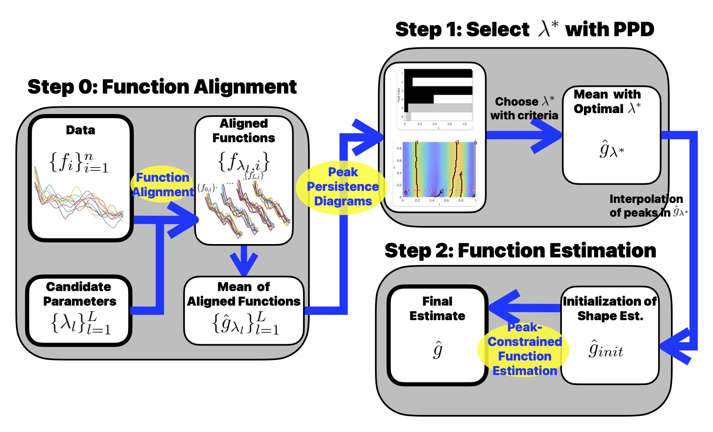- For each \(\lambda_l\), where \(l = 1,...,L\)
- Label peaks of \(\hat{g}_{\lambda_l}\)
- Draw peak persistent diagrams (PPD)
- Select \(\lambda^*\) by two criteria:
\(\quad\quad\) Significance and Persistence
Step 1: PPD and \(\lambda\) Selection
Definition of PPD
Definition
A peak persistence diagram (PPD) of a set of functions \(\{f_i\}\) is a plot of the significant peaks of their partial elastic mean, \(\hat{g}_{\lambda}\), plotted versus \(\lambda\). Depending on the context, one can be interested in either the presence, or heights, or even the locations of significant peaks.
Step 1: PPD and \(\lambda\) Selection
Drawing PPD
Label the peaks in \(\hat{g}_{\lambda_l}\) by comparing the locations of peaks in \(\hat{g}_{\lambda_{l+1}}\).
Let \(\{\lambda_l\}_{l=1}^5 = (0, 0.02, 0.05, 0.15, 0.30)\)
Step 1: PPD and \(\lambda\) Selection
Types of PPD
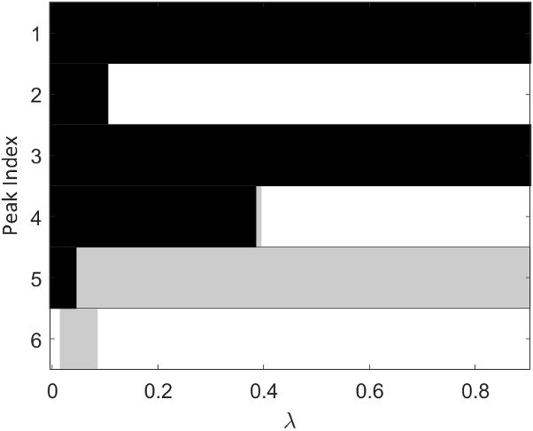
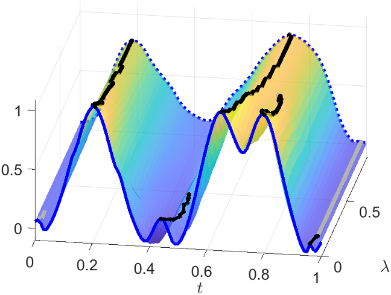
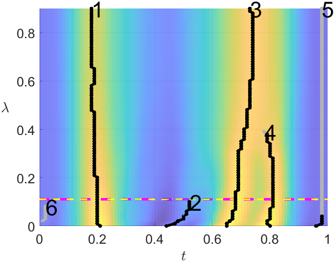
Example
Step 1: PPD and \(\lambda\) Selection
Criterion 1. Significance of a peak
We define strength of a peak in any absolutely continuous function \(f(t_0)\) at a location of a peak, \(t_0 \in [0,1]\): \[ \frac{-\ddot{f}(t_0)}{\max_{t\in[0,1]}{\ddot{f}(t)}}\]
A strength always lies in the interval [0,1].
A peak is insignificant if the strength of a peak is less than a certain threshold, \(\tau\).
Threshold Selection:
- We need an adaptable hyperparameter derived from the dataset.
- For \(i = 1,...,n\), we collect all strengths of peaks in \(f_i\).
- We choose \(\tau\) to be the \(p\)-th percentile of such strength collection.
Criterion 1. Significance of a peak
- Threshold Selection:
- We need an adaptable hyperparameter derived from the dataset.
- For \(i = 1,...,n\), we collect all strengths of peaks in \(f_i\).
- We choose \(\tau\) to be the \(p\)-th percentile of such strength collection.
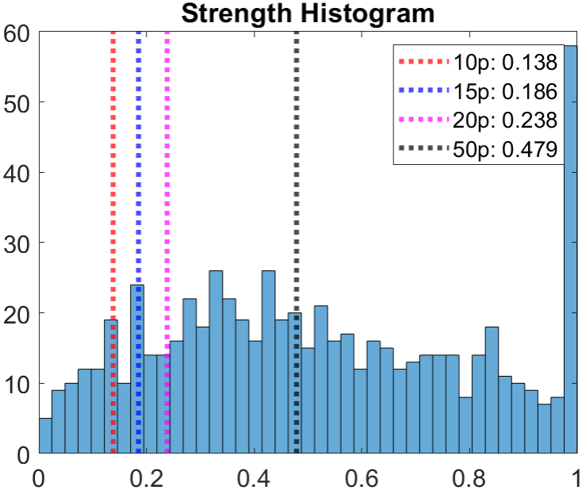
The collection of sorted strengths of raw functions, \(\{f_i\}_{i=1}^n\)
Criterion 1. Significance of a peak
- Threshold Selection:
- We need an adaptable hyperparameter derived from the dataset.
- For \(i = 1,...,n\), we collect all strengths of peaks in \(f_i\).
- We choose \(\tau\) to be the \(p\)-th percentile of such strength collection.
Given \(\hat{g}_{\lambda}\), a peak at \(t_0\) is insignificant if \[ \frac{-\ddot{\hat{g}}_\lambda(t_0)}{\max_{t\in[0,1]}\ddot{\hat{g}}_\lambda(t)} \leq \tau, \]
Step 1: PPD and \(\lambda\) Selection
Criterion 2. Persistence of a peak
The most persistent peak corresponds to the longest bar in the bar chart.
Other persistent peaks are identified based on their bar lengths relative to the longest bar, using a threshold ratio \(\theta\).
Step 1: PPD and \(\lambda\) Selection
(2) Selection of \(\lambda^*\)
- We choose optimal \(\lambda^*\) as close to zero as possible while all significant peaks are included.
- Scatter points: Partially aligned functions, \(\{𝑓^*_{\lambda^*,𝑖}\}\)
- Blue Curve: Mean of partial elastic mean, \(\hat{g}_{\lambda^*}\)
- Cyan Curve: Initial shape function, \(\hat{g}_{init}\)
- Red Curve: Ground truth, \(g\)
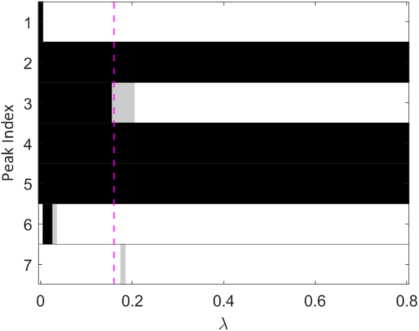
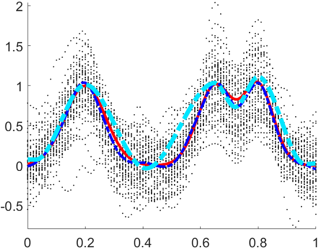
Step 2: Function Estimation with Peak-Constraints

- Obtain shape template from \(\hat g_{\lambda^*}\)
- Estimate \(\hat{g}\) with \(\{f^*_{\lambda^*,i}\}_{i=1}^n\) by keeping number of peaks.
Step 2: Function Estimation With Peak-Constraints
We need a smooth and relaxed fitting method when removing insignificant peaks.
Curve estimation is based on the locations of interior peaks and valleys of the shape estimate, denoting \(\hat{g}_{\text{init}}\).
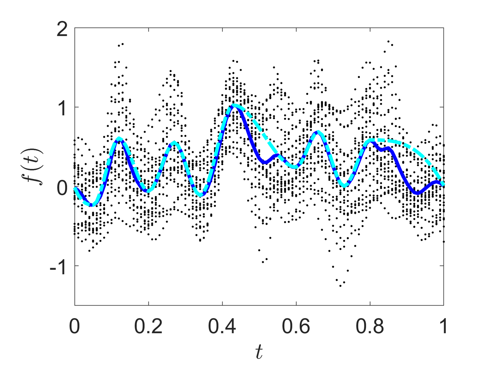
Step 2: Function Estimation With Peak-Constraints
Parameters
Let \(M\) be the number of extrema points of \(\hat{g}_{init}\) which comprises interior peaks, valleys, and the two endpoints.
- Heights of extrema points, denoting \(\mathbf{h} = \{h_k\}_{k=1}^M\).
- Constaints in heights:
\(\quad\) * A valley’s height should be less than the heights of its neighboring peaks.
\(\quad\) * Let \(\mathcal{H}\) be the set of \(\mathbf{h}\)’s satisfying the constraint.
- Locations: Warping of the shape template function.
Deformation
Given a \(\mathbf{h}_0 \in \mathcal{H}\), one can replace the heights of extrema points of \(\hat{g}_{\text{init}}\).
A smooth interpolation of \(\mathbf{h}_0\) is the updated template function, denoting \(g_\mathbf{h}\).
Step 2: Function Estimation With Peak-Constraints
The heights and warping functions can be estimated as follows:
\[ \begin{equation} (\gamma^*, \mathbf{h}^*) = \underset{\gamma \in \Gamma,\mathbf{h} \in {\mathcal{H}}}{\mbox{argmin}} \Bigg( \sum_{i=1}^n \int_0^1 (g_{\mathbf{h}}(\gamma(t)) - {f}^*_{\lambda^*,i}(t))^2 dt + \rho \int_0^1 \ddot{g}_{\mathbf{h}}(\gamma(t))^2dt \Bigg) \end{equation} \]
The final estimation:
\[ \hat{g} = (g_{\mathbf{h}^*} \circ \gamma^*)(t) \]
Step 2: Function Estimation With Peak-Constraints
- Scatter points: Partially aligned functions, \(\{f_{\lambda^*, i}^*\}\)
- Blue Curve: Partial elastic mean, \(\hat{g}_{\lambda^*}\)
- Cyan Curve: Initial Shape Function, \(\hat{g}_{\text{init}}\)
- Green Curve: \(\hat{g}\)
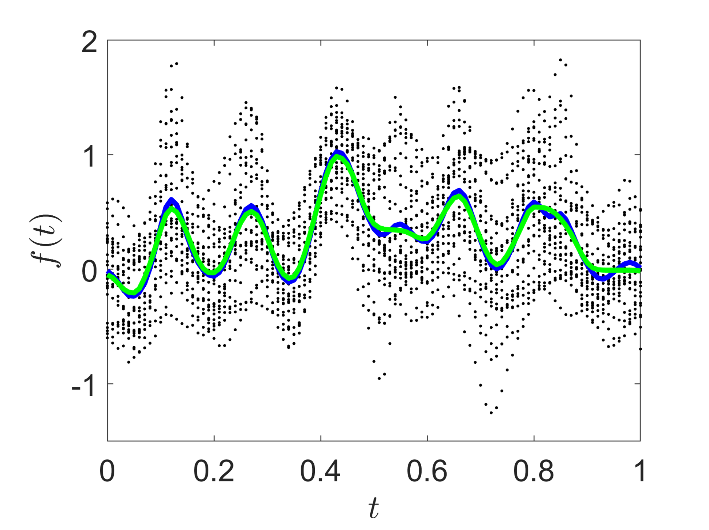
Results

Results
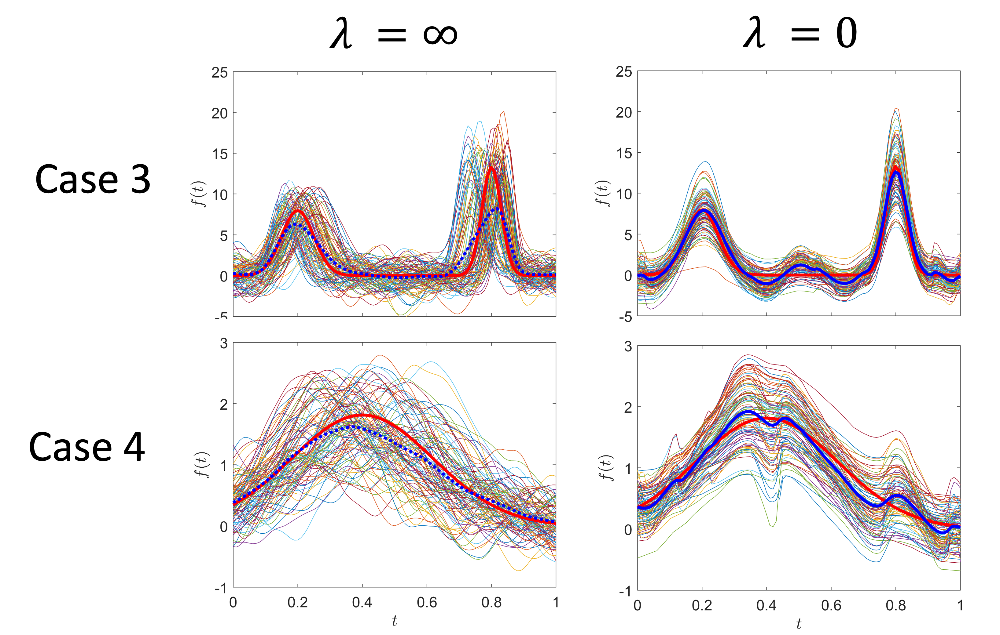 Results
Case 1
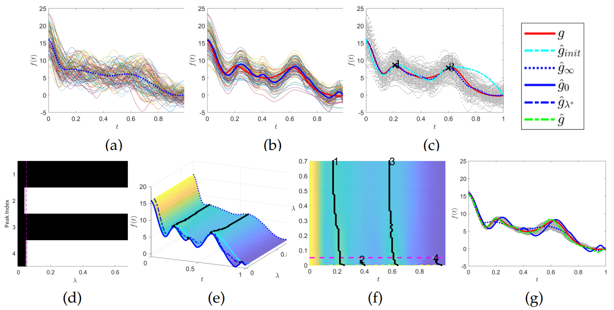 Results
Case 2
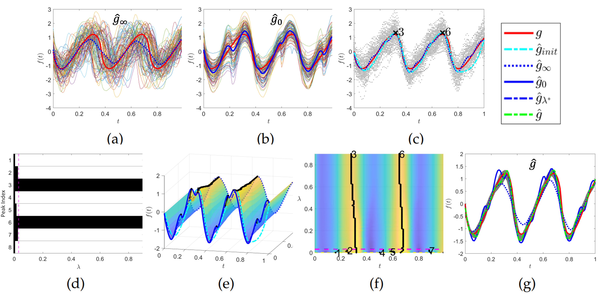 Results
RMSE Comparison
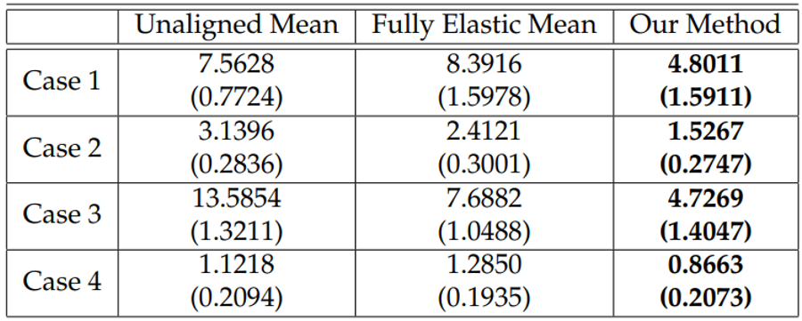 Results
Female Growth Rate
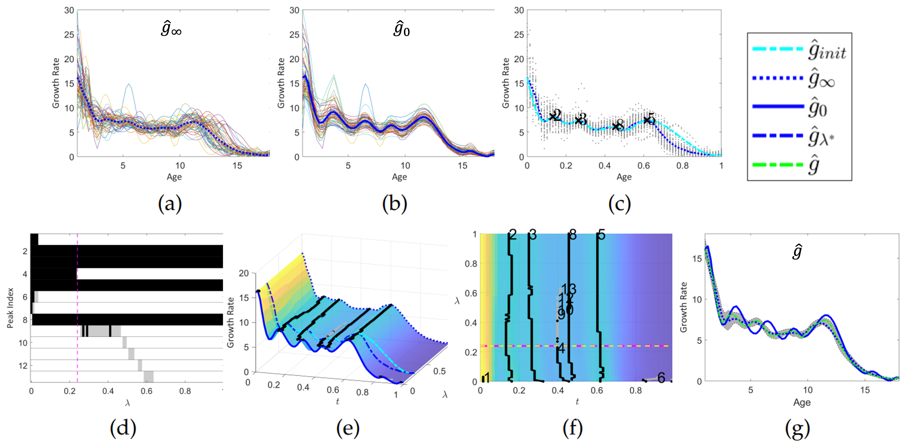 Results
Covid-19
COVID Hospitalization Data for Europe:
The daily hospital-occupancy counts associated with COVID-19 in 25 European countries during the period from April 2020 to July 2021 (Mathieu et al. (2020))
Results
Covid-19
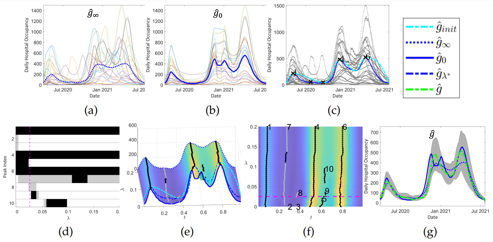2D Planar Curve Registration with Phase and Additive Noise
2D Curve Registration:
Representation of a 2D Curve
A continuous planar curve is parameterized as: \[ \beta: [0,1] \to \mathbb{R}^2, \quad \beta(t) = (x(t), y(t)). \]
Assumptions for this study:
- Noise-Free Data:
- No rotation, translation, or scale noise.
- Arc-Length Reparameterization:
- Curves are analyzed for shape only.
- Noise in Angle Function Space:
- Phase and additive noise are imposed on the angle function instead of the original coordinates.
- Noise-Free Data:
Reparameterization ensures a constant arc-length, focusing on the curve’s shape.
2D Curve Registration:
Planar Curve Components
A planar curve requires two variables:
- Speed Function ( \(\phi\) ): Treated as constant (arc-length).
- Angle Function ( \(\theta\) ):
- Captures tangent direction:
\[ \theta(t) = \texttt{atan2}(\dot{y}(t), \dot{x}(t)). \]
- Captures tangent direction:
- Handling Discontinuity:
- Apply
unwrapto ensure \(\theta(t)\) is smooth and continuous, avoiding jumps in \([-\pi, \pi]\).
- Apply
2D Curve Registration:
Model Specification
The angle function \(\theta_i\) of an arc-length reparameterized curve \(\tilde{\beta}_i\) is modeled as: \[ f_i(t) = (g \circ \gamma_i)(t) + \epsilon_i(t), \] where:
\(\quad f_i(t)\): Angle function of \(\tilde{\beta}_i\),
\(\quad g(t)\): Mean angle function,
\(\quad \gamma_i(t)\): Warping function,
\(\quad \epsilon_i(t)\): Additive noise.
For a consistent notation with the previous work, we replace the notation \(\theta_i\) to \(f_i\).
Challenges with Noise in Original Coordinates
- Noise in \(x(t)\) and \(y(t)\) causes:
- Divergence in angle unwrapping.
- Misalignment of angle function peaks and troughs.
- Reconstruction error amplies while working with curvature of the curve.
Motivation for Aligning Angle Derivatives, \(\dot f_i\)
- Vertices (Points of maximal curvature):
- Key bending points of 2D curves.
- Captured only through curvature information.
- Why aligning angle derivatives?
- Angle derivatives embed curvature information.
- Preserve essential shape features such as vertices for accurate alignment.
Results
PPD Comparison
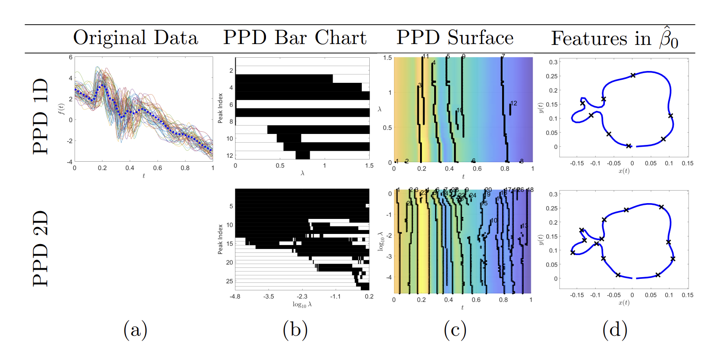 Results
Case 1
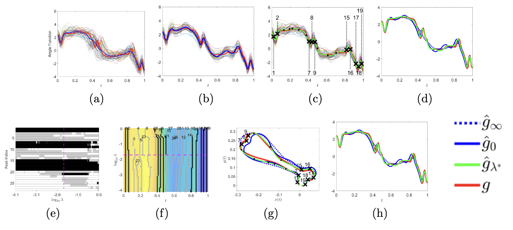 Results
Case 2
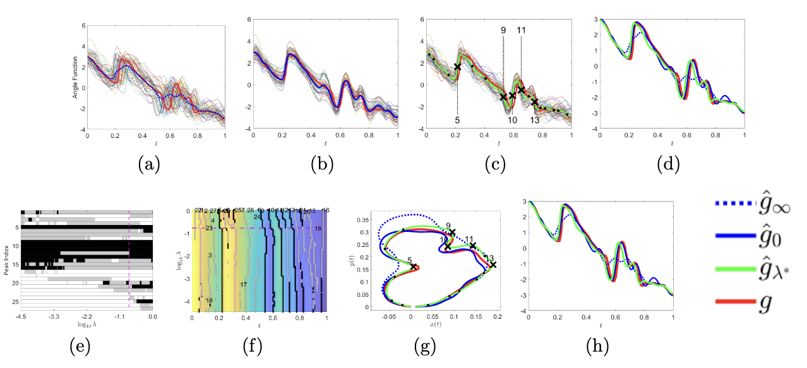 Results
Case 3
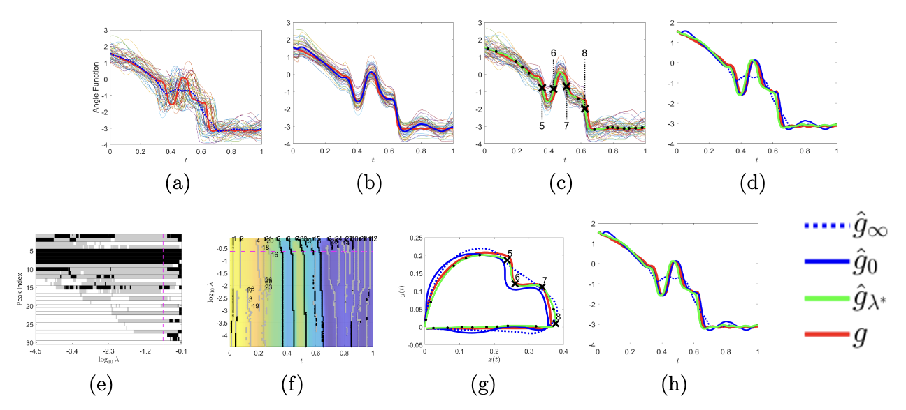2D Curve Registraion by Trajectory
Alignment and Trajectory Construction
Function Alignment
For \(l = 1,...,L\), collect \(\{\lambda_l\}_{l=1}^L\) from a log-scaled grid.
Collect partial elastic means: \(\{\hat g_{\lambda_l}\}_{l=1}^L\).
Dimensionality Reduction
The trajectory \(\{\hat{g}_{\lambda_l}\}_{l=1}^L\) is discretized over \(T\) time points, forming a data matrix \(\mathbf{G} \in \mathbb{R}^{L \times T}\).
PCA is applied to reduce dimensionality: \[ \mathbf{C} = \frac{1}{T - 1} \mathbf{G} \mathbf{G}^\top, \quad \mathbf{C} \mathbf{U} = \mathbf{U} \Sigma^2.\] where \(\mathbf{U} \in \mathbb{R}^{L \times L}\) is a matrix with columns of eigenvectors.
The trajectory in the reduced space is: \[ \mathbf{Z}_L = \mathbf{U}_{[:,1:J]}^\top \mathbf{G}, \quad \mathbf{Z}_L \in \mathbb{R}^{L \times J}, \] where \(J\) indicates the first \(J\) largest eigenvalues which explains at least 95% of the variance.
Principal Curve Estimation
- Local jitter in the trajectory generated by the rows of \(\mathbf{Z}\) makes small loops in the trajectory.
- A smooth approximation of the trajectory is called principal curve denoting \(S\).
- It can be achieved by a cubic spline approximation method.
- \(S\) can be parameterized as \(\mathbf{s}(\xi)\) is computed:
- \(\xi \in [0,1]\) represents arc length normalized by the total length of \(S\).
- Each trajectory point is projected onto \(S\) using: \[ \xi_l = \underset{\xi \in [0,1]}{\arg \min} \|\mathbf{r}(\lambda_l) - \mathbf{s}(\xi)\|. \]
Order Correction
- Monotonic regression ensures \(\lambda\) progression is preserved: \[ \min_{\mathbf{y}} \sum_{l=1}^L \|\mathbf{s}(\xi_l) - \mathbf{y}_l\|^2, \quad \text{subject to } \mathbf{y}_{l-1} \leq \mathbf{y}_l. \]
Resampling \(\lambda\)
- After constructing the principal curve, \(\lambda\) is resampled on a linear grid for consistent spacing: \[ \{\lambda_k\}_{k=1}^K, \quad \lambda_k = \lambda_{\text{min}} + \frac{k-1}{K-1} (\lambda_{\text{max}} - \lambda_{\text{min}}). \]
- Resampling ensures:
- Uniform resolution for downstream analysis.
- Better interpretability of the alignment trajectory.
Stable Regions and Upper Bound
- Density-based clustering (DBSCAN) identifies stable regions.
- Stable regions:
- High-density regions in PC space correspond to stabilized alignment behavior.
- Correlation matrix \(\mathbf{R}\) refines the upper bound for \(\lambda\): \[ \mathbf{R}(k_1, k_2) = \frac{\mathbf{C}(k_1, k_2)}{\sqrt{\mathbf{C}(k_1, k_1) \mathbf{C}(k_2, k_2)}}, \quad \mathbf{C} = \frac{1}{K - 1} \mathbf{Z}_K \mathbf{Z}_K^\top. \]
Results (link)
Discussion and Future Plans
- Followup topics for Dissertation
Trajectory Analysis: Explore 2D curve trajectories directly, avoiding reliance on angle functions.
Efficient Computation:
- Leverage gradient descent for computational efficiency.
- Highlight its independence from the number of discretized function points.
Investigate deeper theoretical justifications for the methods employed.
Develop Bayesian frameworks for richer and more flexible warping solutions.
Thank you